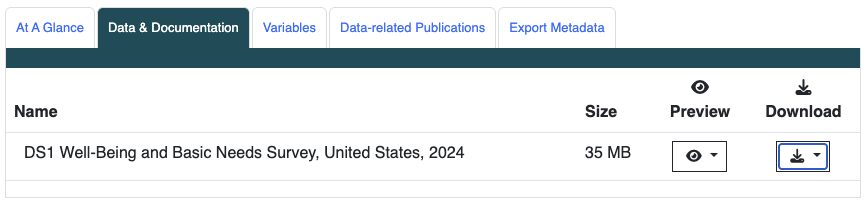
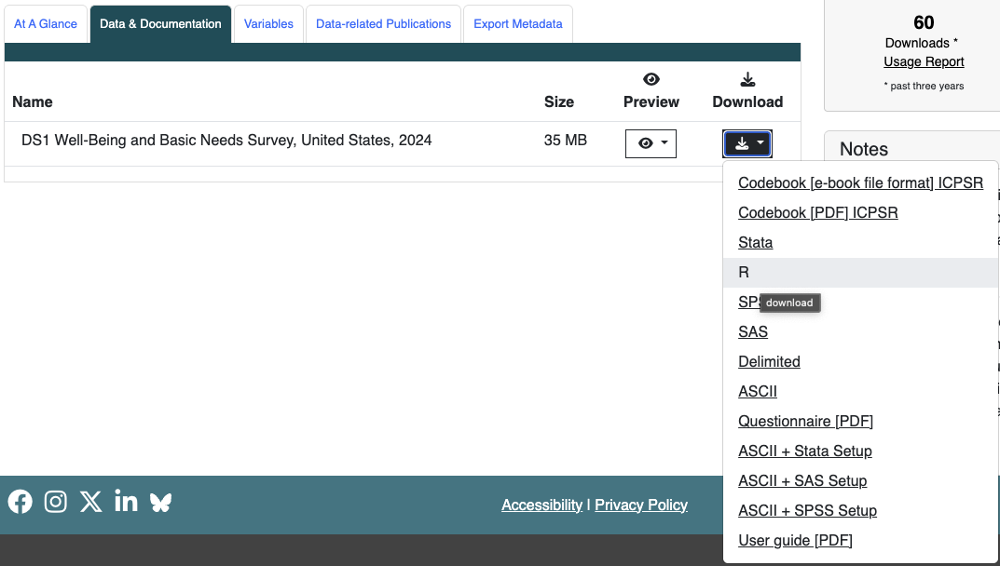

new_df <- old_df |>
mutate(
across(
where(is.factor), ~ {
levels(.) <- gsub("^\\(-?\\d+\\)\\s*", "", levels(.))
.
}
)
)Lab 1 Instructions
PUBH 523/623
1 Directions
You can download the .qmd file for this lab here.
The above link will take you to your editing file. Please do not remove anything from this editing file!! You will only add your code and work to this file.
2 Lab activities
2.1 Familiarize yourself with the Well-Being and Basic Needs Survey
Please read the Urban Institute’s page on the Well-Being and Basic Needs Survey (WBNS) and more of their published information of the survey (at least the first 4 pages). You can also read about the overarching From Safety Net to Solid Ground Initiative that started the survey. Answer the following questions:
- What is the motivation for this study?
- How could an analysis that looks at associations with food insecurity help facilitate change in policy?
- Why is it important to study food insecurity?
ImportantTask
Answer the following questions using information on WBNS:
- What is the motivation for this study?
- How could an analysis that looks at associations with food insecurity help facilitate change in policy?
- Why is it important to study food insecurity?
2.2 File organization
Before downloading the data, set up your folders for the class and project, including making an .Rproj file. Make sure you are working with the project by using the here() function to display your working directory.
ImportantTask
Display your working directory using the here package and here() function.
Insert an image of your folder organization with the .Rproj file in the correct place.
2.3 Access and download the data
- Go to the Health and Medical Care Archive page for the 2024 Well-Being and Basic Needs Survey
- Go to the Data & Documentation tab

- Download the R version of the Public use data

- Read and agree to the Terms of Use. After this, you will be redirected to a new page.
- Log into ICPSR by clicking “Access through your institution”. You should be taken to a new page where you need to select “Oregon Health & Science University”

- Login using standard OHSU login. Then the download should begin!
- Make sure to move this into your project folder under the “data” folder.
- Take a look at the folders/files you just downloaded. Make sure to locate and understand the difference between the Codebook, Questionnaire, and User Guide. (Note that the website also contains the codebook if you go to the variable tab. I think the online one has an easier user interface than the pdf.)
- Read the User Guide! There is some important information about the data and how to use it.
ImportantTask
No task to report back on. Just make sure you have the data and read the User Guide!
2.4 Load the data and rename the dataset
The dataset you downloaded from ICPSR comes compressed in a zip file. Once you unzip it, locate the R data file (which usually has a .RData or .rda extension) inside the data folder.
Load your data using the appropriate functions for the file type and file path. Once your data are loaded, assign the dataset a cleaner, more intuitive name for your project workflows.
ImportantTask
Load your downloaded data file into R. Rename the loaded object to a clean dataset name of your choice.
2.5 Decide on your project question
At the end of this project, we will create a scrolling fact/information sheet that will display summaries and visuals of the WBNS data that focus on a specific question.
Choose one of the following 4 options for your project scope:
- The Safety Net Multiplier: How do overlapping nutrition programs (SNAP
Q26, free school mealsQ26A, free groceriesQ25, free mealsQ25A) collectively stabilize food security environments? - The Health Insurance Dividend: How does having public health coverage remove financial barriers to care and support medical utilization?
- Housing & Rental Assistance Impact: How do rental vouchers and utility safety nets support overall household stability?
- Work Support Resilience: How do child care subsidies or financial assistance programs bolster a family’s capacity to navigate emergencies?
ImportantTask
Write down your chosen project option number.
2.6 Getting data in working format
Use the following code (with your dataset’s name) to remove the parentheses with values that are in front of the category names. You need to copy this code and change old_df and new_df to your respective dataset names.
Use glimpse to verify that the parentheses are gone.
ImportantTask
Remove the parentheses with values that are in front of the category names. Verify that the parentheses are gone using glimpse().
2.7 Save data for processing with .Rda
Within this document, or in a separate document, use R to save a copy of the dataset so that you can process it without changing the raw data. Recall the file organization that we discussed to set up proper folders. Include a screenshot showing the new .Rda file within your Data folder.
ImportantTask
Include a screenshot showing the new .Rda file within your data folder.
Lab 1 Instructions – Introduction to R Lab 1 Instructions – Introduction to R Lab 1 Instructions – Introduction to R Introduction to R PUBH 523/623 PUBH 523/623